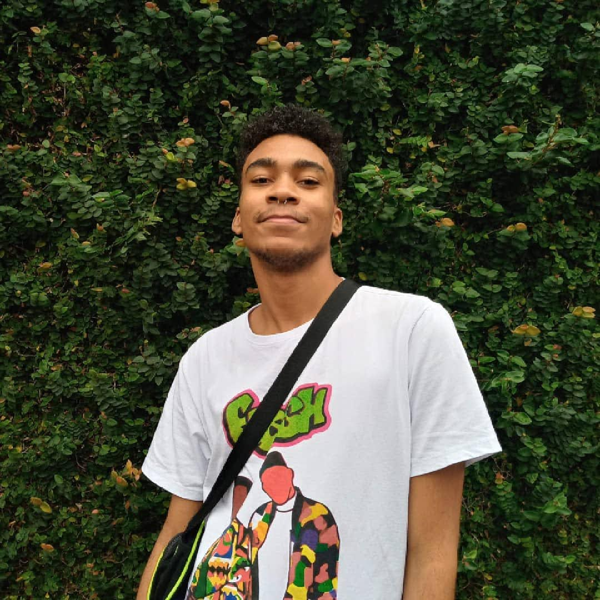

Olá, sejam bem vindes! Me chamo Gabriel porém, pode me chamar de Ariel, e aqui você encontra meu trabalho!
Meu nome completo é Ariel Martins, tenho 20 anos, meus pronomes são elu/delu e ele/dele e sou de Santos, no litoral paulista, cidade do lendário Santos Futebol Clube. Nesse site feito 100% a partir de meus conhecimentos em HTML, CSS e upload de sites, estudando pela minha graduação no IFSP - Campus Cubatão e pela plataforma Alura, você encontrará meu projetos feitos e alguns em andamento desde o começo da pandemia, ou seja o ano de 2020. Esse ano representa um marco que é o início dos meus estudos para me tornar designer de interface e desenvolvedor front-end.
